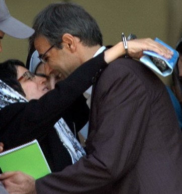
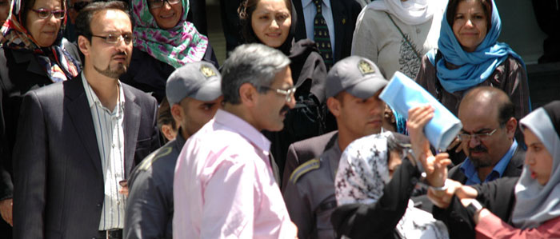
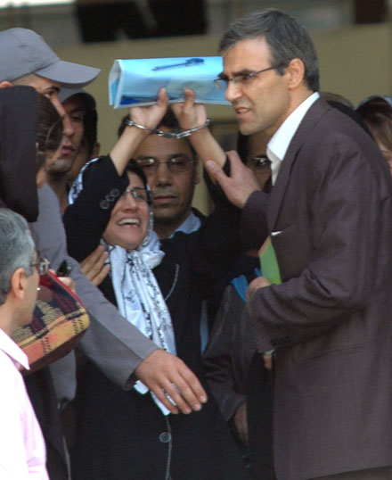
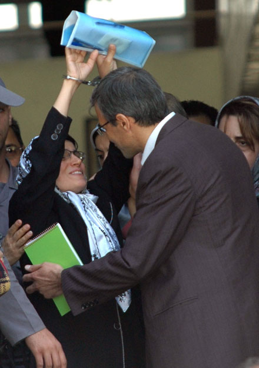
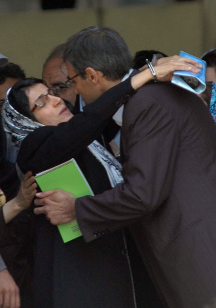
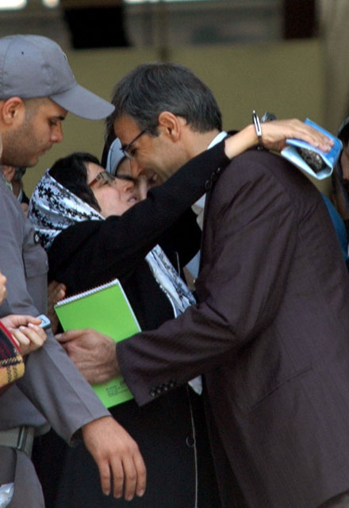
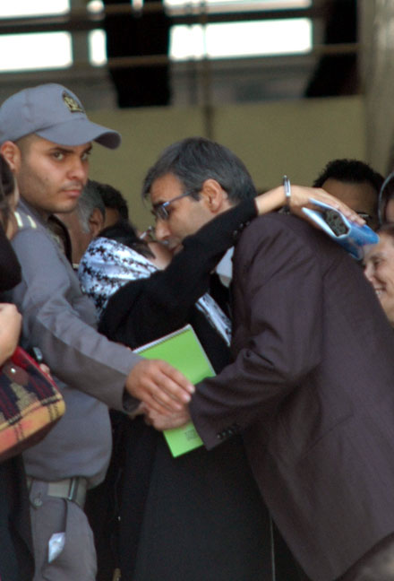
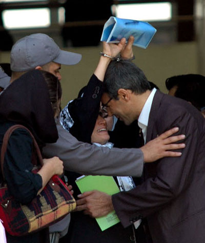
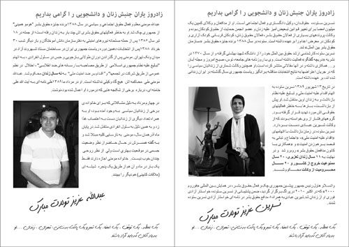
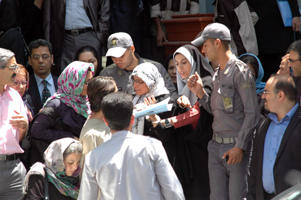

|
|
|
Browsing
Contact Us |
Campaigners |
Face to Face |
Tribune |
Interview |
News |
On the Web |
One Million |
Report
Farsi | Français | German | Italian | Spanish | العربية Also in this section
|
 An Encounter with Nasrin Sotoudeh: Hands of a Witness, Forever UnbowedNahid Jafari - Translated by Roja Bandari Monday 30 May 2011 Change for Equality: They are supposed to bring Nasrin Sotoudeh to the building of the Bar Association at 11 am today. We are all gathered. The crowd of lawyers and women’s rights activists is gradually growing.
 We wait in the hallway at the lower level. Reza Khandan, Nasrin’s spouse, is walking on the upper level. Our eyes follow him down. "They have brought Nasrin a little earlier than 11 o’clock," he says.
 Our hearts flutter with anticipation. At first only a few of us along with Mr. Khandan enter a room where Nasrin is being held. A female guard and a few lawyers are also in the room. We take care to avoid creating any tension so that we are at least allowed to see Nasrin. Others enter the room one by one.
 We are all exhilarated to see Nasrin, and she is too. We embrace her. Tears begin to fall. We don’t know if the tears are from the joy of seeing her, or the heartbreak of not having seen her for 9 months, or because of the overwhelming strength we see in a familiar face we have learned so much from. Tears keep running down our faces.
 Time flies. Guards are forcing us to leave the room. Many of the younger lawyers are gathered around and one of them says to the guards: "You must not mistreat us! This is the Bar Association; you should not have an antagonistic attitude."
 We calm down. From the hallway we see Nasrin through the glass windows. She waves. Maybe the reason she is joyful is her presence among her coworkers. The joy is evident in her eyes and her manner. She is happy and that makes us all happy too. Even Reza Khandan’s eyes are filled with joy. The formal atmosphere of the Bar Association has now grown warm and friendly. One of the younger attorneys whose father is a seasoned member of the Bar quotes, "my father has said if the Bar Association revokes Nasrin Sotoudeh’s certification he will refuse to work with the Bar Association in the future." I wish Nasrin could hear this and knew how much she is esteemed.
 Judiciary officials had earlier demanded the revocation of Nasrin’s certification to practice law. But the Bar Associate adopted this case in order to guarantee the rights of its member lawyer. Today is the first day of the court to deal with case of revocation of Sotoudeh’s Bar certificate. Ms. Keyhani, a board member of the Bar Association, is chairing the court along with a few other lawyers.
 We are awaiting the results outside. One of the lawyers exits the courtroom and in response to a question by a women’s rights activists says, "the court is going to be held at another time."
 Once again we are happy and full of energy. While we wait outside, we distribute the brochures made by women’s rights activists for the upcoming birthdays of Nasrin Sotoudeh and Abdollah Momeni. A biography and pictures of these two prisoners of conscience is attached, one a distinguished lawyer and a women’s rights activist, and another a prominent student activist. The title reads, "Celebrate birthdays of friends of the women’s rights movement." The footnote reads, "A moment, a pause, a signature, a stamp and an envelope addressed to Tehran, Evin Prison.... Remembering those who should be free."
 At half past noon, two male soldiers and a female guard bring Nasrin out. Nasrin is holding her cuffed hands up above her head while she is escorted to the car. The female guard tries to pull down Nasrin’s hands but does not succeed. On the stairs leaving the building to the street, Reza Khandan suddenly holds Nasrin’s head in both hands and showers her with kisses. A guard tries in vain to separate them. We are all in awe. Are we witnessing the resilience of love? Are these kisses Reza has promised their children Mehrave and Nima to deliver to their mother? One of the activists tries to capture this moment but the guard takes away the camera. I insist that it’s my camera, but the guard ignores me... Today we take flight once again. We are proud of Nasrin and we are proud of ourselves to have her, always unbowed with hands that are never lowered. |